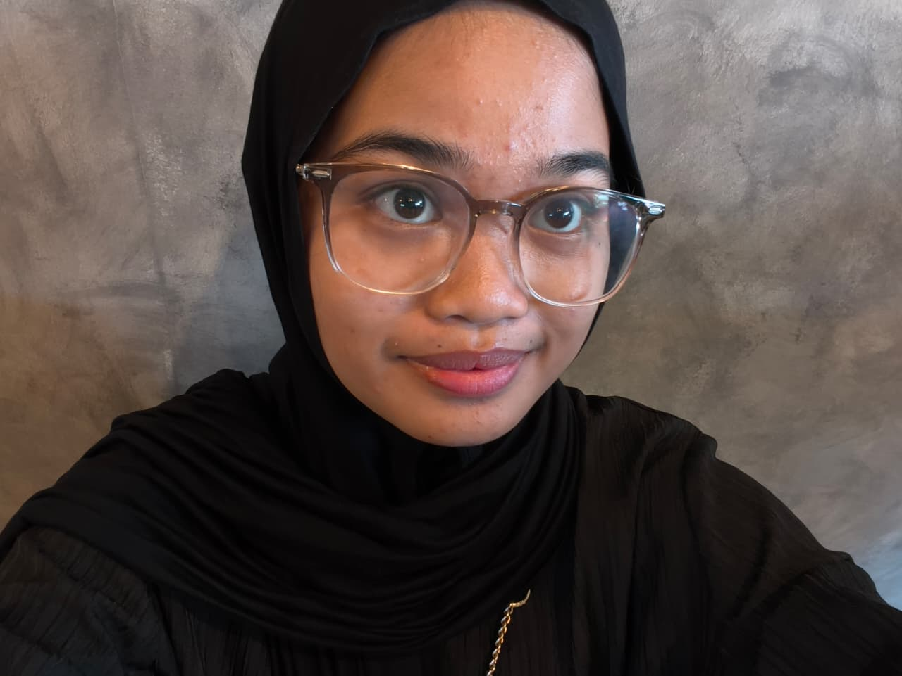

Program Studi Teknik Komputer, Politeknik Negeri Medan
Halaman ini berisi profil singkat dan proyek yang pernah saya kerjakan selama perkuliahan.
Lihat Proyek Hubungi Saya
Saya mahasiswa Program Studi Teknik Komputer di Politeknik Negeri Medan yang sedang mendalami pada bidang Internet of Things, keamanan siber, dan jaringan komputer.
Saat ini saya masih terus belajar melalui praktik langsung dan terbuka untuk berdiskusi.
Beberapa proyek dan bidang yang pernah saya kerjakan.
Sistem penyiraman tanaman otomatis yang dilengkapi pemantauan kualitas tanah secara real-time menggunakan sensor IoT dan kecerdasan buatan.
IoT AI Smart FarmingMeraih juara pada lomba CTF Jeopardy. Mempelajari cara menemukan celah keamanan pada aplikasi web dan cara memperbaikinya.
Cyber Security WebMengikuti pelatihan Junior Network Administrator yang membahas dasar-dasar perancangan, konfigurasi, dan pengelolaan jaringan komputer.
Jaringan Pelatihan